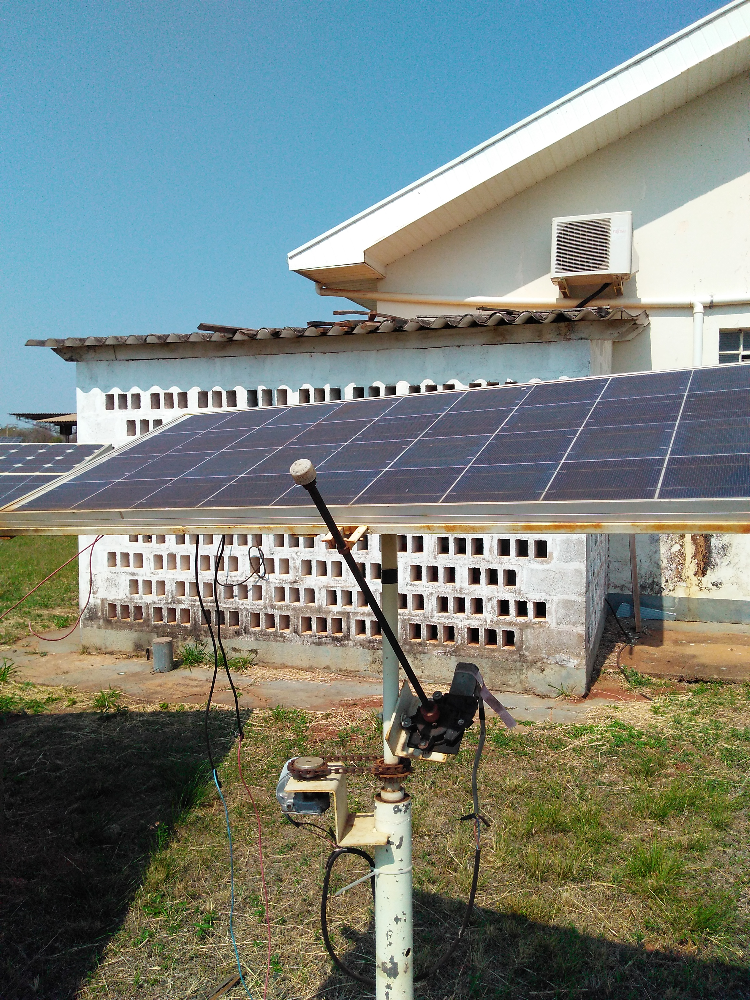

Undergraduate Electrical and Electronic Engineering
Project Overview
In the summer of 2019 I held an internship with the International Assossiation for the Exchange of Students for Technical Experience (IAESTE). I was tasked to develop sun tracking software for dual axis solar panel at the UNESP Renewable Energy Laboratory in Sao Paulo, Brazil . I was able to use four light dependent resistors (LDRs) mounted on a breadboard in order to track the direction of the sunlight. However, each LDR had a completely different response to varying brightness, making it incredibly difficult to track the sun with a linear controller. I realized this problem was not case specific, each LDR has a different light response due to manufacturing variability.
My solution was to apply a simple fuzzy logic based controller. Fuzzy logic is more flexible, in that each logic variable can have a unique membership function. I took advantage of this to define “bright” uniquely for each LDR depending on its calibrated response. I then applied four simple rules:
| Antecedent | Concequent |
|---|---|
| If east bright and west dark, | then rotate east |
| If east dark and west bright, | then rotate west |
| If north bright and south dark, | then rotate north |
| If north dark and south bright, | then rotate south |
My solution also involved establishing a communication protocol between the computer and the microcontroller. Furthermore, I coded the fuzzy logic backend from scratch in Python, primarily for my own learning experience.
As a side note, dual axis solar panels currently cost around twice as much as fixed mounted systems, but only provide an extra 40% increase in energy production [1]. Thus, adding an extra panel has the same cost as a dual-axis system, but provides an extra 100% increase in energy production, making it a clear winner. Dual axis panels could be important in specialized, space limited cases. For instance, they could be used on satellites, or in robotic applications.
Brazil Distributed Photovoltaics Economics

Over the course of my internship, from research and from conversations with my supervising professor, I received some interesting insights into the realities of implementing distributed photovoltaics in Brazil.
I was initially very interested in hybrid solar systems, which mesh energy from mains and solar power banks depending on capacity and user demand [2]. These can be very economic when the cost of consuming power is much higher than the return from power generation. However, I learned that in most Brazilian states, due to the current rules for distributed generation, these systems are virtually nonexistent, as there are very profitable incentives for energy fed into the grid [3]. This could change, as it is currently uncertain whetherthe government will maintain the current subsidies.
In Brazil, photovoltaics are also seen as a solution to providing energy in remote areas that lack grid access. Here, systems are more expensive, as they require a full power banks to store energy for periods without sunlight. These systems could both be applied to communities, or as solutions to industries such as mining.
It was very interesting to witness how this technology responded to a tropical climate. During my internship period, for instance, there was an explosion of one of the car batteries in the back of the model house. I am not sure what exactly caused the explosion; however, the town experienced rapid temperature shifts from 14 degrees to 39 degrees, and periods of incredibly high humidity, which I am sure played a large contribution. This means that batteries used in an off-grid system may have a much shorter lifetime than expected – reducing system cost effectiveness.
Furthermore, in the last week there was a storm with ferocious wind surges, which knocked down several of the solar panels around the university. Aside from cheaper installation, this is another reason why panels are fixed directly to house rooves – when the panels are flush against them they are more protected from the wind. However, houses are not always positioned in the correct angle to receive the most sunlight, as such there can be a reduction in energy output.
I also learned how many complications go into calculating system pay-off time. For instance, if you believe your system pays off in 15-20 years, then you run into a bit of a challenge. While your panels (without wind damage) can function well for 25 years, your standard inverter has a much shorter lifetime (around 10 years), which means it will have to be replaced [4]. It is possible to find expensive inverters with 25 year warranties, however, this is does not usually make financial sense. You can assume that due to innovations, market inverters in 10 years will be cheaper and more efficient, making replacement advantageous.
References:
- [1] https://www.solarreviews.com/blog/are-solar-axis-trackers-worth-the-additional-investment
- [2]https://www.ecoelectric.com.au/hybrid-solar-systems/
- [3] https://news.energysage.com/important-warranties-solar-installation/
- [4] http://www.solarmango.com/ask/2015/09/28/what-is-the-lifetime-of-solar-inverters/